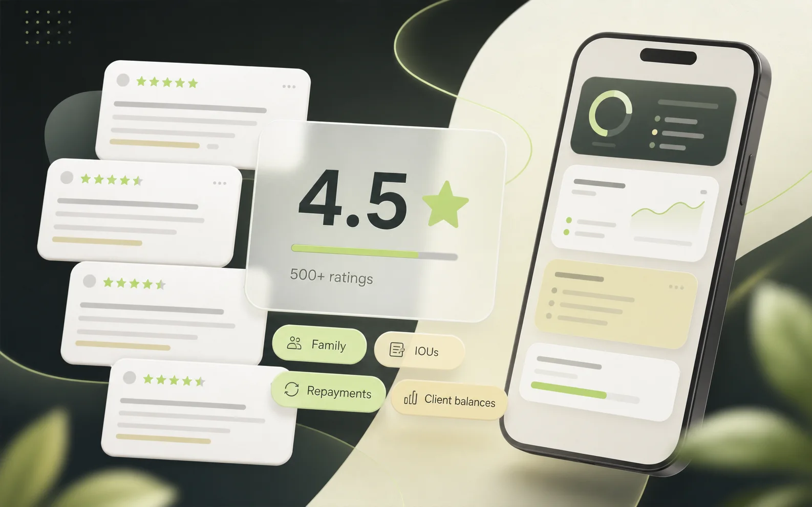

App Store review highlights
You Owe Me Reviews
Real App Store reviews from people using You Owe Me to track IOUs, family reimbursements, loans, shared expenses, client balances, reminders, and repayments.

Real App Store review highlights
What users say about You Owe Me
These featured reviews show the main trust themes that come up across the written App Store reviews already featured on this website.
App Store review
I love this app! Easy to use and very efficient
“This app has made my life so much easier. Between keeping track of the accounts and bills I manage for my elderly parents, and same for my boyfriend and me, I have a lot of loans and repayments happening.”
“It also has a feature for recurring charges/payments, which has been a big help as well.”
App Store review
Simple, Stress-Free Way to Track Family Loans
“I use You Owe Me to keep track of loans I give to my kids, and it’s been great. The app is very easy to use, even for someone like me who isn’t very tech-savvy. It’s taken all the stress out of tracking money between family.”
App Store review
Super Handy App!
“This app is a lifesaver! I finally have an easy way to track money I’ve loaned or am owed.”
“No more awkward ‘you still owe me’ talks—just open the app and it’s all there. Simple, reliable, incredibly useful.”
App Store review
Great app - Great developer
“I contacted the developer and he was super receptive to the idea. He developed it and now we have live links.”
“Literally only took a couple of weeks and he had it all up and running, and designed beautifully too! I have purchased the lifetime subscription.”
Selected App Store reviews
Reviews by use case
The remaining written reviews from the homepage are grouped by the situations they describe: family reimbursements, IOUs, business records, ease of use, and developer support.
Family reimbursements and parent expenses
Several reviews describe You Owe Me as a practical place to keep track of family loans, parent expenses, kids, reimbursements, interest, and recurring costs. For the dedicated parent-bill workflow, see the Elderly Parent Expense Tracker.
Related guide: track subscriptions and bills you pay for family.
App Store review
A Mothers Love
“You Owe Me has been a life saver. My kids can no longer forget what I loan them or what they have paid back. Being able to add interest is a super plus. The reminders and letters gets to the point. I love this app.”
App Store review
If I could only have one app...
“Truly a favorite app! I use this app more consistently than 99% of all others on my phone. It is invaluable at keeping me on track with purchases made on behalf of multiple family members.”
App Store review
“Perfect app for handling IOUs! It’s intuitive, efficient, and easy to use. It has been SO helpful for me in managing the money paid back and forth between me and my elderly parents.”
Loans, IOUs, and repayments
These reviews focus on simple debt tracking, money owed, loan details, repayment histories, and the practical relief of having the numbers in one place.
If you are comparing this kind of record with a spreadsheet or notebook, read the spreadsheet vs app guide.
App Store review
Great App
“This app is so useful for me to keep my data safe and right by my side. I hated having to go get my notebook every time a transaction was made. It’s so nice having all the details of each transaction too.”
App Store review
Easy To Use!
“This app is super innovative and makes it easy to keep track of the money people owe you. Highly recommended!”
App Store review
Super!
“Very good app. Nice design, easy to use, and straightforward. I can set a date and change it later for any loan. Everything else can be edited too. Very flexible.”
App Store review
The best loan tracker app 😇
“I’ve tried several apps, but this one is the best!”
Business, clients, and clear records
Some reviewers talk about lender records, business use, accessibility, and keeping balances clear enough to rely on later.
App Store review
Great App
“Superb app. I purchased the Unlimited Entries and Members subscription, and it has everything a lender needs to keep clear records. Great interface and accessibility.”
App Store review
Simple and efficient
“One of the best apps to track your money—whether you’re lending or running a business. Simple, user-friendly, and it gets the job done.”
Ease of use and developer support
These reviews emphasize the clean interface, daily use, fast fixes, currency requests, reminders, recurring entries, and the fact that the app is actively cared for.
App Store review
This app is AMAZING!!
“From the first use, the layout and organization stood out, and performance is smooth. I reported a small profile-photo bug; the developer replied quickly and fixed it in the next update.”
App Store review
Highly recommended
“This is my go-to app for a year now for daily financial logs. It has been much easier and more convenient than anything I used before. The UI is simple and clean despite all the features.”
App Store review
Everything you need
“I’ve used this app for a long time. It’s the only app where the developer truly listens and responds. The interface is very easy to use, transactions are fast, and it supports many currencies, reminders, and recurring entries.”
App Store review
awesome app
“You can put a note to every transaction and the developer added my currency within like 3 days of me requesting it! Other apps exist, but this app is convenient and there are no subscriptions.”
App Store review
Small useful app
“There are a number of apps like this, but this one is the best so far. The simplest interface with solid functionality. I use it daily—everything in one clean screen.”
App Store review
No alternative
“No app is flawless, but there really is not anything better out there. The developer listens to feedback and fixes issues fast. This is not an abandoned project.”
Review patterns
What users mention most
- Easy to use
- Family loans
- Elderly parent expenses
- Recurring entries
- Reminders
- Interest tracking
- Many currencies
- Clean design
- Developer listens
- Clear records
What the reviews show
You Owe Me is not only a loan tracker
People use it for family reimbursements, IOUs, shared expenses, client balances, recurring costs, repayments, and long-running balances. The common thread is not just who borrowed money. It is keeping the balance, history, reminders, and next message clear.
For the full product workflow, explore all features. For specific situations, see the elderly parent expense tracker, family reimbursement tracker, shared expense tracker, client payment records, expense tracker for couples, roommate expense tracker, or the polite payback reminder generator.
Trust notes
Review details
Are these real App Store reviews?
Yes. These are selected written App Store reviews already featured on the You Owe Me website. The page does not invent reviews or use generated testimonials.
Why can the rating count be different in different places?
App Store rating counts can vary by country or storefront. You Owe Me has 4.5 stars from 500+ App Store ratings worldwide, while individual storefronts may show a different local count.
What do people use You Owe Me for?
The reviews mention IOUs, family reimbursements, loans, repayments, recurring charges, reminders, client records, clear histories, and everyday money between people.
Keep money clear before it gets awkward
Track the balance, remember the history, and know what to say next.
Updated